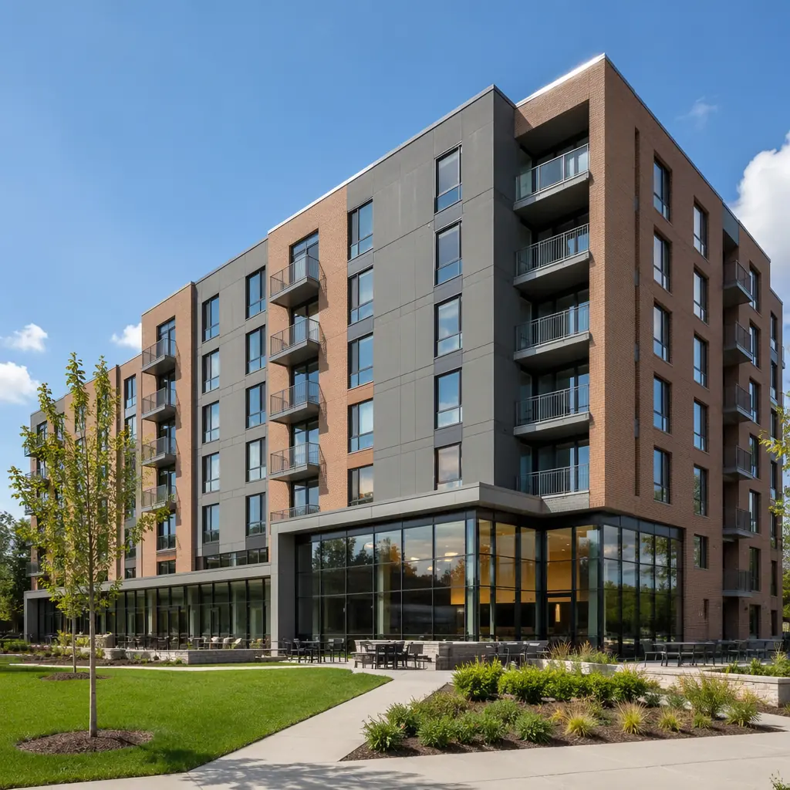
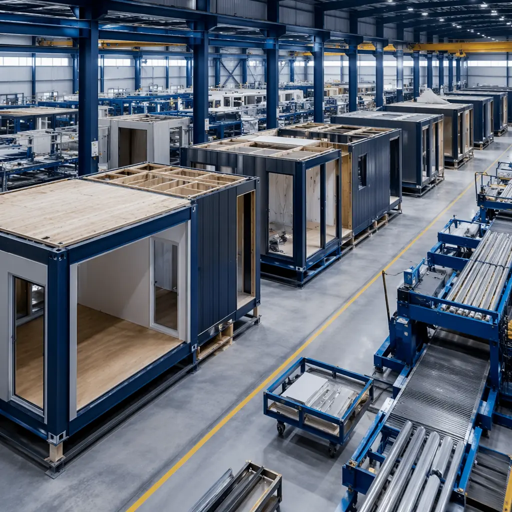
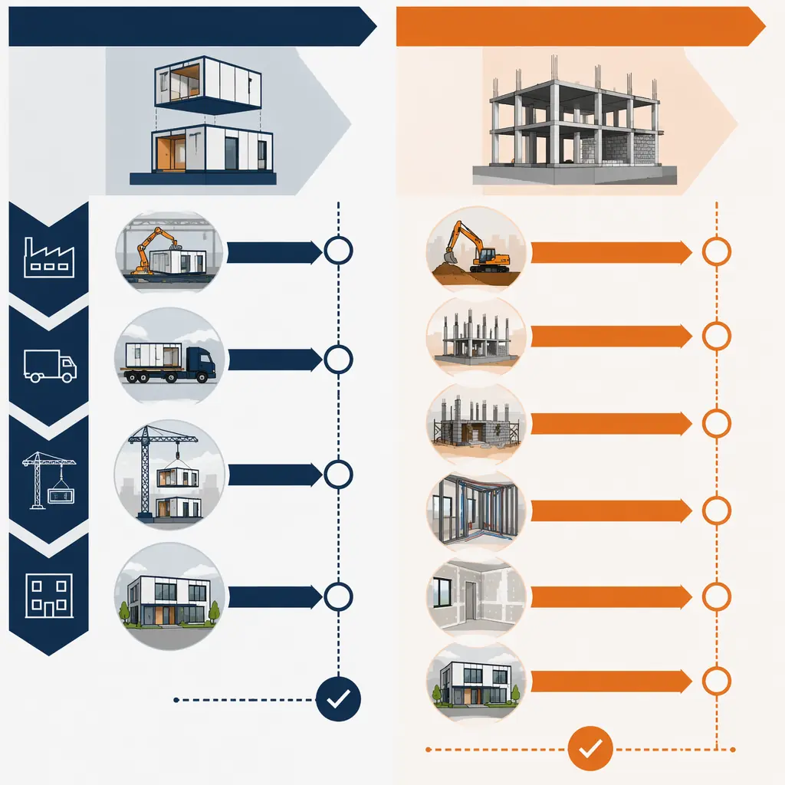
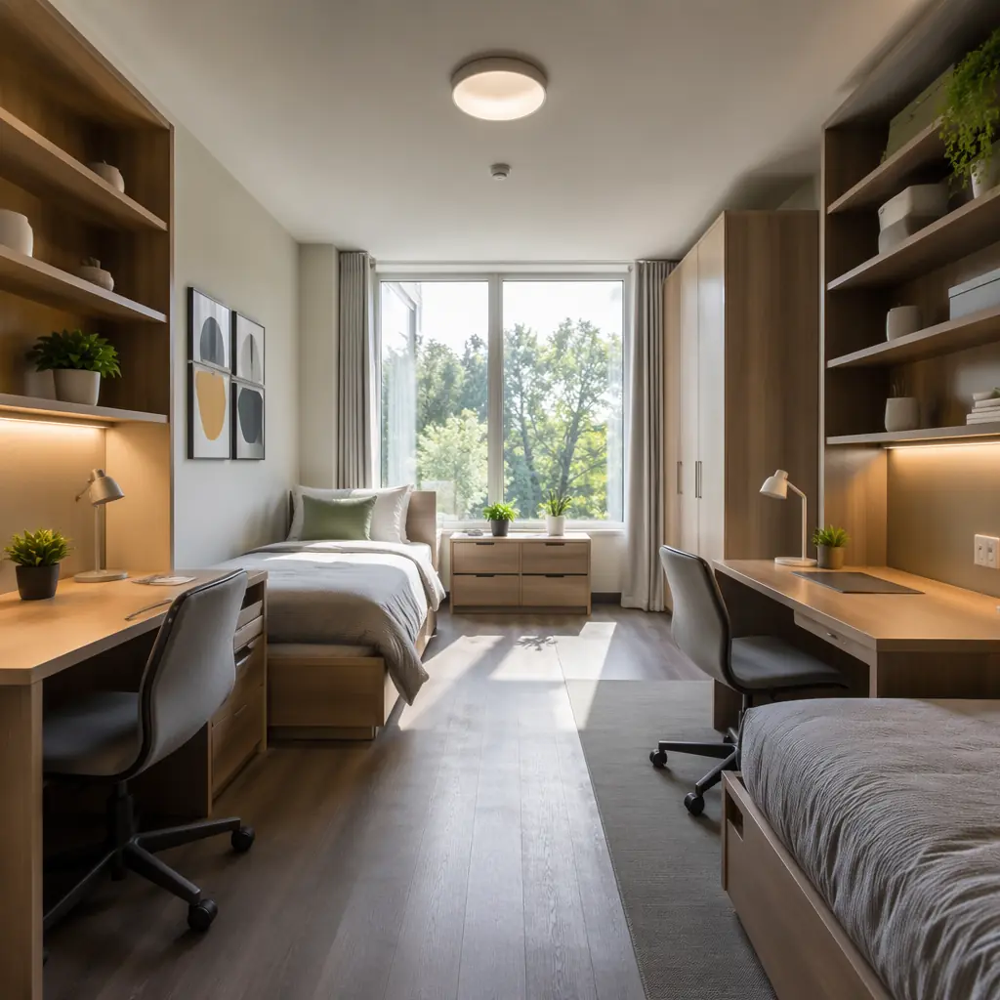
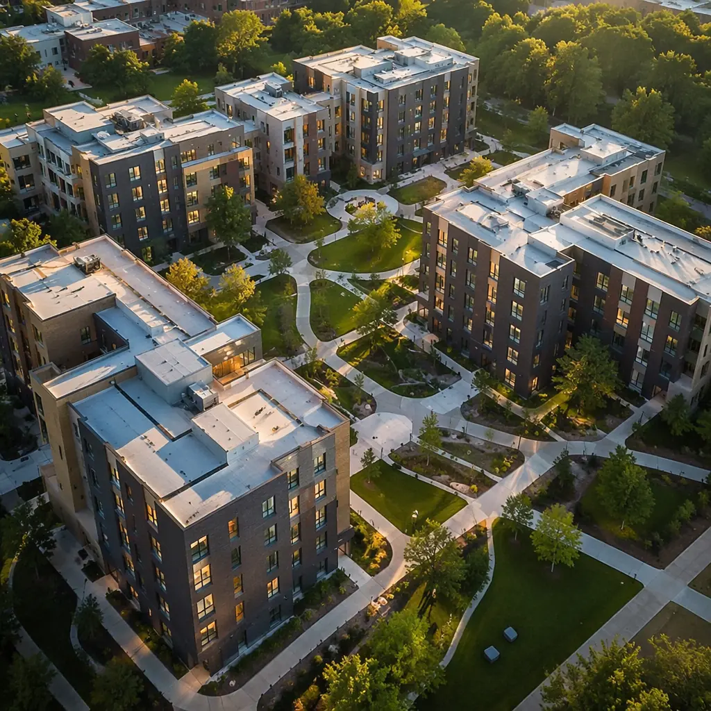

Every August, the same story plays out on campuses worldwide: a university's new residence hall isn't ready. Students are placed in temporary housing. Construction crews work overtime. The project's fall-semester deadline — the one hard deadline in academic construction — has been missed. Again.
For university administrators and student housing developers, the academic calendar isn't negotiable. A building that opens in October instead of August is a building that sits 80% empty for nine months while carrying full debt service. Modular construction changes that equation — not by working faster on-site, but by removing most of the work from the site entirely.
This guide examines modular student housing from the decision-maker's perspective: cost, schedule, design, code compliance, and the operational realities that determine whether modular is the right choice for your next dormitory project.

Why Student Housing and Modular Are a Structural Match
Student dormitories share a characteristic that makes them ideal for modular construction: they are composed of repeating, near-identical living units. A 300-bed residence hall might contain 250 double-occupancy rooms, 20 single RA units, and 5 common-area modules — roughly five distinct module types repeated across the building. That repetition is exactly what modular manufacturing is optimized for.
On a conventional dormitory project, each room is framed, insulated, drywalled, tiled, and finished by different crews working in different conditions over 14–18 months. In a modular factory, a single production team builds the same bathroom pod 250 times on the same jig with the same tools. By the 50th unit, every movement is optimized. By the 150th, defect rates approach zero. This is the fundamental advantage: modular doesn't just move construction indoors — it introduces manufacturing repetition that site-built construction cannot replicate.
MODURA's residential construction experience spans over 12,000 modules produced since 2009, with configurations that readily adapt to dormitory layouts — suites, semi-suites, and traditional double-occupancy rooms within the same building. Our four factories (North America, Europe, Asia-Pacific) provide a combined annual capacity of 4,000 modules, which means we can scale to a 500-bed project without challenging production capacity.

The Financial Case: What Modular Dormitories Actually Cost
University budgets operate differently from market-rate development. The financial case for modular student housing rests on three distinct advantages: compressed construction timelines that hit academic-year deadlines, reduced soft costs and change-order risk, and long-term operational savings from higher-quality building envelopes.
Timeline Compression and the Academic Calendar
A conventional 300-bed dormitory runs 16–20 months from groundbreaking to occupancy. With a May groundbreaking — the earliest possible after spring commencement — that pushes move-in to September of the following year. Miss a single subcontractor milestone, and the building isn't ready until January. That's a full academic year of lost housing revenue and a campus housing crisis.
A modular equivalent runs 7–9 months. Site work (foundation, utilities, podium) proceeds concurrently with module fabrication in the factory. With the same May groundbreaking, modules arrive in September, are set over 4–6 weeks, and interior finishing completes by December. Students move in for spring semester.
The financial math for a 300-bed dormitory at $800/month per bed (a typical university housing rate):
- Conventional timeline: 18 months construction → occupancy delayed to following fall → 12 months lost revenue = $2.88M
- Modular timeline: 9 months → spring semester occupancy → revenue begins month 10 → only 4 months lost = $960K in lost revenue
- Net revenue gain from schedule compression: $1.92M
That $1.92M isn't hypothetical — it's the difference between housing 300 students or scrambling to rent temporary off-campus apartments. For a university relying on housing revenue to service construction bonds, it converts a financial liability into an asset eight months earlier.
Hard Cost Breakdown
Modular dormitory hard costs typically run within 3–8% of conventional construction on a per-square-foot basis. But that comparison misses three significant cost offsets that bring modular below parity for most student housing projects:
- Change orders average under 5% of contract value (vs. 15–20% industry average for conventional). In a factory, scope changes happen at the design stage — not when a subcontractor discovers a condition in the field.
- General conditions savings of 40–55%. When site duration drops from 18 months to 5 months, you eliminate 13 months of site supervision, temporary utilities, security, and equipment rental.
- Construction loan interest savings of $400K–$650K on a typical $18M student housing project, based on an 18-month vs. 9-month draw period at 7.5% average construction loan rates (current as of Q2 2026). For detailed budget benchmarks, see our construction cost per square foot guide.
Across our 500+ completed projects, modular projects deliver within 5% of original budget 92% of the time — a predictability metric that matters enormously to university boards and bond-rating agencies.
Lifecycle Cost Advantage
Student housing takes a beating. Residents are hard on finishes. Maintenance teams are stretched thin. Modular construction addresses this in two measurable ways:
Energy performance: Factory-built envelopes test at 0.15 ACH50 — roughly 60% tighter than typical code-built dormitories. For a 300-bed facility in the Northeast or Midwest, that translates to $35,000–$50,000 in annual HVAC savings. Over a 30-year building lifecycle, that's $1M+ in avoided energy costs — a figure that directly improves the project's net-present-value calculation. For a comprehensive breakdown, see our energy efficiency guide for modular buildings.
Maintenance predictability: Warranty claims on modular student housing run approximately 55% lower than conventional equivalents in the first five years, based on our post-occupancy data. The driver is consistent factory assembly — bathroom waterproofing failures, the single most expensive recurring maintenance item in dormitories, are virtually eliminated when every bathroom is built on a jig and pressure-tested before leaving the factory floor.

Design: Campus Architecture Without Compromise
A concern we hear regularly from university architects: "Will it look like a dormitory, or will it look like a shipping container?" The answer depends entirely on the design approach — and modular does not constrain architectural expression nearly as much as the industry perception suggests.
Module Dimensions and Room Configurations
Our student housing modules are built around transport-optimized dimensions: 12–14 feet wide, up to 60 feet long, with 9-foot ceiling heights standard (10-foot available for common areas). Within these parameters, common student housing configurations include:
- Double-occupancy suite: Two modules joined with a corridor connection, providing two bedrooms, a shared bathroom, and a small common area — 380–420 sq ft total, the most popular configuration for undergraduate housing.
- Semi-suite: Single module with two bedrooms sharing a bathroom — 280–320 sq ft, ideal for graduate and upper-division housing.
- Apartment-style: Three-module combination with four single bedrooms, two bathrooms, kitchen, and living room — 720–780 sq ft, suited for family housing or premium graduate accommodations.
- RA / studio units: Single module with private bathroom and kitchenette — 200–240 sq ft, distributed one per floor for resident advisors.
Exterior and Campus Integration
Our buildings support the full range of exterior finishes expected in campus architecture — brick veneer, limestone panel, fiber cement, metal panel systems, and composite cladding. Windows are factory-installed and sealed, eliminating weather-dependent quality variability. Roof forms include flat, pitched, and green-roof assemblies compatible with campus sustainability commitments. Balconies, canopies, colonnades, and entrance features are added on-site after module placement, creating the architectural depth and shadow lines that define a building's character.
Multiple recent projects have received AIA design recognition — modular origin is not visible in the finished building. The MODURA design-to-delivery process includes dedicated architectural coordination to ensure the building meets campus design standards and integrates with existing campus fabric.

Code Compliance: Fire Safety, Accessibility, and Structural Requirements
Student housing faces higher regulatory scrutiny than market-rate apartments. Fire and life safety requirements (NFPA 101, IBC Chapter 4 for Residential Group R-2), ADA/Fair Housing accessibility mandates, and campus-specific structural standards all apply. Modular actually simplifies compliance in several key areas:
Fire-Rated Assemblies
Corridor walls, unit separation walls, and stair enclosures in dormitories typically require 1-hour or 2-hour fire ratings. In modular construction, these assemblies are built and inspected in the factory under controlled conditions, with full documentation. Third-party inspection agencies verify fire-rated assemblies at the factory before the module ships. On a conventional site, a fire-rated wall's performance depends on the drywall crew's work that day — and inspection catches defects, but doesn't prevent them. For complete fire safety requirements, see our fire safety construction guide.
Our modules achieve STC 55 between units — exceeding the IBC STC 50 minimum by a margin that matters when 300 students are living inches apart. Consistent party-wall construction means noise complaints, the most common source of dormitory roommate conflicts, drop substantially compared to conventionally built halls.
ICC-ES Certification
MODURA modules are ICC-ES certified for compliance with the International Building Code, which simplifies permitting in most North American jurisdictions. The certification covers structural performance, fire resistance, and building envelope integrity. For university projects — which often involve additional state-level review processes — having pre-certified building components reduces permitting timelines by 4–8 weeks compared to a fully custom conventional design.
Accessibility
ADA-compliant units are integrated into the module production sequence. Accessible bathrooms with roll-in showers, grab bars, and clearance zones are built to the same precision tolerances as standard units — ±2mm — ensuring compliance that doesn't degrade between design and occupancy. For more on structural resilience, see our seismic design guide for modular construction. Distributed accessible units (typically 5–7% of total bed count per ADA/FHA requirements) can be placed on any floor through module-level designation during factory scheduling.
Real Project: 350-Bed Undergraduate Residence Hall, University of British Columbia
In 2025, MODURA delivered a 350-bed undergraduate residence hall for UBC's Vancouver campus — a project that illustrates modular's advantages under challenging site conditions and a hard academic-year deadline.
- Building type: 6-story mixed-use podium with 2 floors of common space (dining, study lounges, laundry) and 4 floors of residential modules
- Unit mix: 140 double-occupancy suites (280 beds), 50 single semi-suites (50 beds), 10 RA studios, 10 accessible units
- Site constraint: Tight urban infill site with limited staging, adjacent to an active classroom building
- Conventional estimate: 22 months, $32.5M
- Modular actual: 9.5 months, $27.8M
- Time saved: 12.5 months (57% reduction)
- Cost saved: $4.7M (14.5% reduction) — including general conditions savings of $890K from the compressed site schedule
- Site disruption: 20 truck deliveries over 5 weeks vs. 18 months of continuous construction traffic. Adjacent classroom building operated without interruption throughout.
- Punch-list items at handover: 47 (university benchmark for comparable conventional project: 210+)
- Occupancy: Students moved in August 2025, on schedule for fall semester
The project's modular approach was particularly valuable for the site constraint. With only 12 feet of clearance on two sides and an active academic building 30 feet away, 18 months of conventional construction would have generated continuous noise, dust, and traffic complaints. The 5-week module setting period concentrated disruption into a summer window when the adjacent building was largely unoccupied.

When Modular Makes Sense for Student Housing — And When It Doesn't
Modular isn't universally the right answer. Here is a decision framework based on project characteristics:
Strong Candidates for Modular
- Projects with 80+ beds — Below 80 beds, factory mobilization and transport costs don't achieve economies of scale. Above 200 beds, repetition advantages compound significantly.
- Projects with hard academic-year deadlines — If the fall move-in date can't move, modular's schedule reliability is the primary value proposition, not cost savings.
- Tight or constrained sites — Urban campuses, sites adjacent to active buildings, or locations with limited laydown area benefit from the compressed on-site duration.
- Repeatable unit layouts — Projects with 3–8 unit types repeated across the building maximize the factory advantage. Buildings with 20+ unique room layouts dilute modular's repetition efficiency.
- Multi-phase campus master plans — If the university plans to build 3–5 residence halls over a decade, the factory setup cost amortizes across all phases, making modular increasingly economical over time.
Weaker Candidates
- Small renovations or additions under 40 beds — stick-built is likely more economical.
- Highly irregular architectural geometry — Buildings with extensive curves, non-orthogonal walls, or highly customized floor plates lose the repetition advantage.
- Sites without crane access or truck staging — Modules require a 200-ton mobile crane and flatbed truck access. Sites without this capability need to factor in alternative logistics costs.
What to Ask a Modular Partner Before You Commit
- How many student housing projects have you delivered? — Student housing has specific requirements (fire-rated corridors, ADA distribution, semester-deadline delivery) that differ from apartments or hotels. Ask for references at comparable universities.
- What's your production capacity and current backlog? — A factory running at 90%+ capacity may not be able to accommodate your timeline. MODURA's four factories provide geographic and capacity redundancy — a project delayed at one facility can be shifted to another.
- How do you handle campus-specific requirements? — Universities often have campus design standards, sustainability requirements (LEED, WELL, or campus-specific green building policies), and unique procurement processes. Your modular partner should have experience navigating these.
- What does your warranty cover, and what's your post-occupancy response time? — Modular warranty terms should match or exceed conventional construction. Ask for data on warranty claim rates, not promises.
- Can you provide a guaranteed maximum price at design development? — The modular factory's controlled environment should enable earlier price certainty than conventional construction. If a modular partner can't commit to a GMP at DD phase, their cost control isn't as strong as they claim.
The Bottom Line
Modular student housing has moved well past the experimental phase. With projects delivered at universities across North America, Europe, and Asia-Pacific, the data is consistent: modular dormitories open 50–57% faster than conventional construction, cost 12–18% less on a total-project basis, and deliver measurably higher quality in the metrics that matter — energy performance, sound isolation, and warranty claim rates.
For university administrators facing enrollment growth, aging housing stock, and bond-financing timelines that don't tolerate delays, modular construction replaces construction risk with manufacturing certainty. That's not a marketing claim — it's the difference between 47 punch-list items at handover and 210.
The decision isn't whether modular can work for student housing. It's whether you want your next residence hall to be ready for fall move-in, or the one after that.
Contact our education team for a preliminary feasibility assessment. We provide a concept design, timeline comparison, and guaranteed-maximum-price estimate tailored to your campus within three weeks.